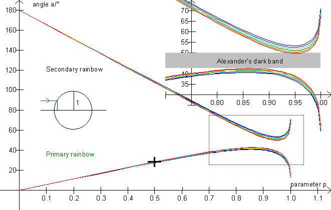
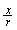
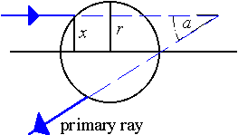

On this picture, the
rainbow angle is depicted as a function of the impact parameter p
which is defined through p = 

Exercise 10
Use the illustration to calculate approximate values of the amount of radiation which is scattered into the angle intervals below, setting the amount of sunlight falling on the drop to 100 %, corresponding to 0 £ p £ 1 for both halves of the drop. (E.g., the parameter interval [0; 0,456] corresponds to 22,8% of the radiation).
You can choose a color with the track bar in the lower left. »Marks, F2« makes it easier to measure the parameter values corresponding to the angles. Then calculate the radiation percentages from the (sum of) parameter intervals.
| angle, a | parameter value(s) | angle interval | radiation / % | ||
0° |
0°-25° |
||||
25° |
25°-35° |
||||
35° |
35°- Vmax |
||||
60° |
Vmin - 60° |
||||
100° |
60°-100° |
||||
180° |
100°-180° |
||||
Color = ___________ Amax = _________ Amin = _________
Draw a histogram of the radiation as a function of the angle.
I.e., draw the angle intervals on the 1st axis, and above the intervals, draw rectangles with areas corresponding to the radiation %.
Exercise 11
From which half of the drop does the primary rainbow come?
From which half of the drop does the secondary rainbow come?
This clearly shows that the primary rainbow is narrower and thus also brighter than the secondary rainbow.
Why is Alexander's dark band darker than the sky outside the rainbow?
What is the sequence of the colors in the rainbows?